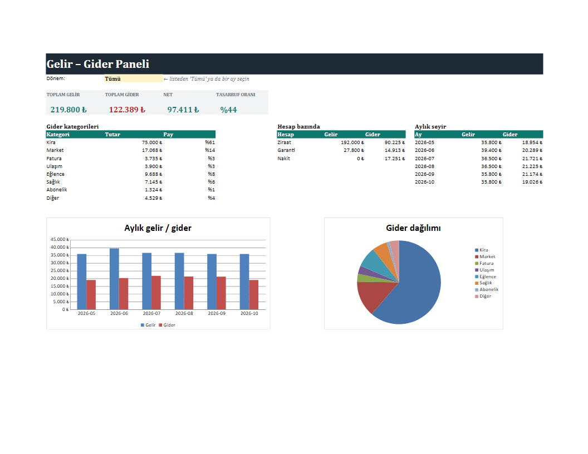

Tek ekranda gelir-gider paneli
Banka hareketlerini tek sayfada gösteren Excel örneği: dönem seçince (liste kutusu) tüm özet, hesap kırılımı ve grafikler güncellenir. Hareketler sayfasına yeni satır eklemeniz yeterli; formüller kendiliğinden hesaplar.

Örnek çalışma: tüm veriler kurgusaldır.